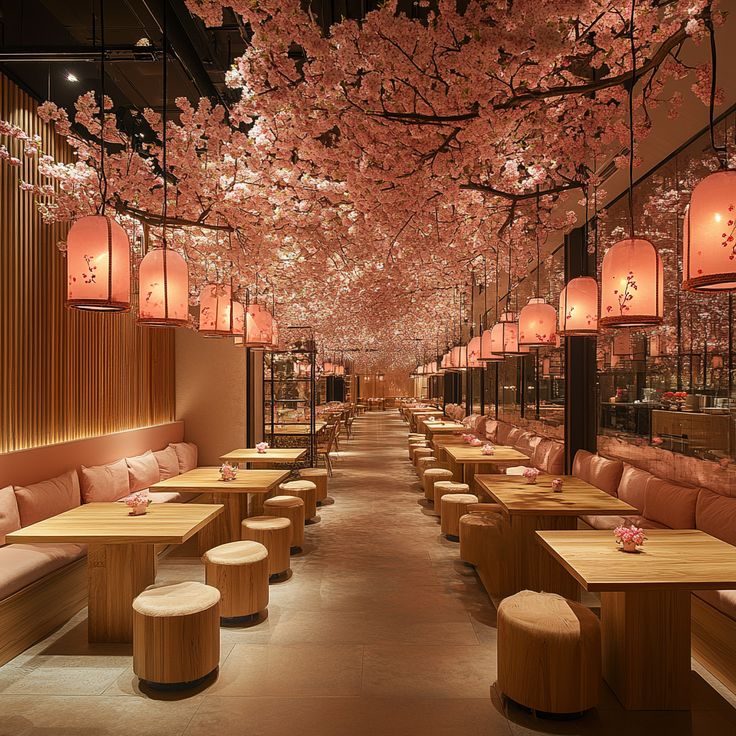
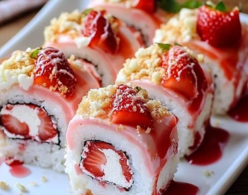
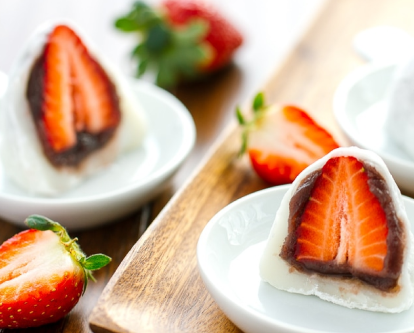
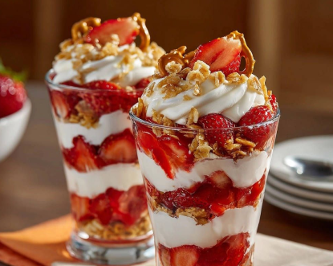
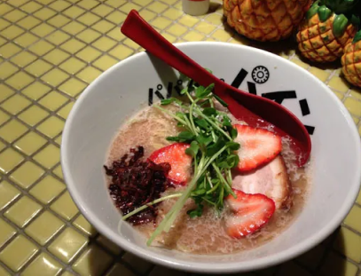
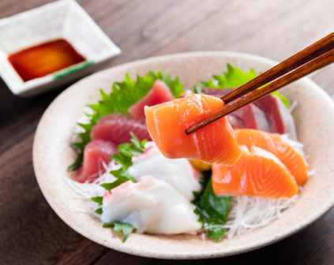
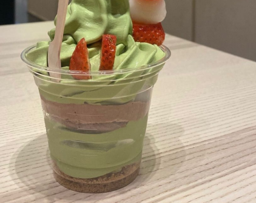

Ichigo's Fine Dining Restaurant, people get the dining experience with a twist of the traditional Japanese cuisine. The Japanese name for "Strawberry," the menu highlights our inspired strawberry-infused dishes, mochi, and seasonal specials that celebrate Japan's beloved fruit.

Fresh strawberry wrapped in rice with a glaze of sweet sauce.
$5.00
Soft rice cakes filled with red bean paste and fresh strawberry puree.
$7.50
Layers of fresh strawberry, vanilla yogurt, granola with pretzels on top.
$9.00
Savory ramen broth topped with tender chicken marinated in strawberry reduction, noodles, and a soft-boiled egg.
$9.50
Premium sashimi selection served with strawberry-vinegar dipping sauce and pickled radish.
$12.00
Creamy matcha ice cream swirled with strawberry puree.
$6.00"Tried everything in the Signature menu. such a genius Restaurant!"
"Aesthetically pleasing restaurant, and great staffs indeed!"
"I could die now that I tasted all the food here!!"